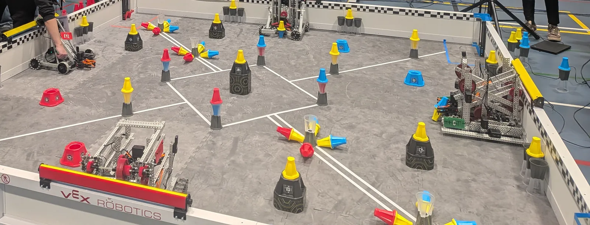
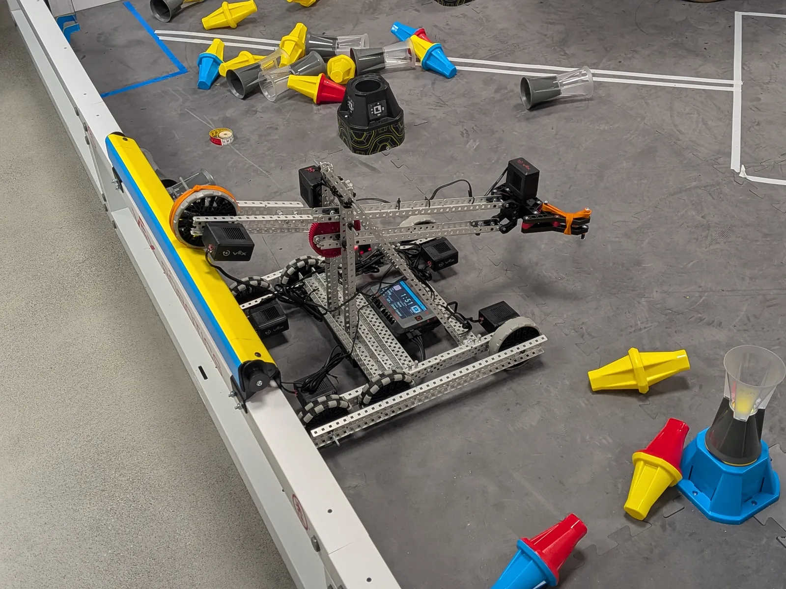
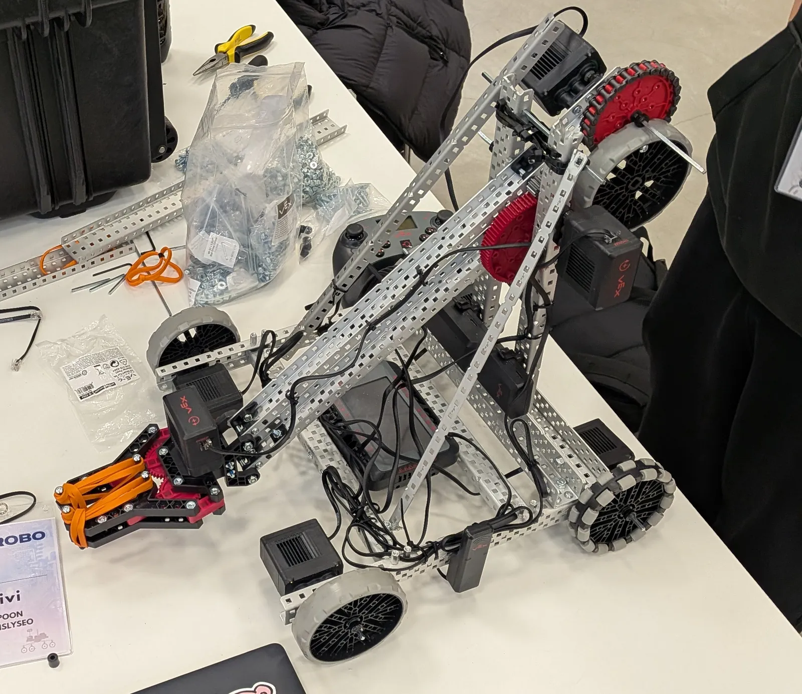
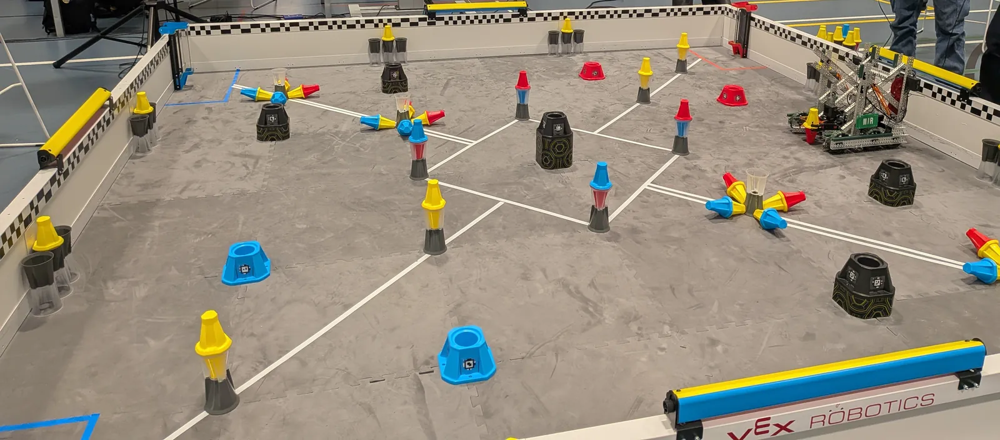

Otarobo 2026
Joukkue osallistui Otarobo 2026 -kilpailuun VEX V5 -roboteilla. Kuvat on rajattu niin, ettei kenenkään kasvoja näy.




Rakennat ja ohjelmoit VEX V5 -robotteja yhdessä joukkueen kanssa.
Tekeillä. Oppitunteja tulee sivulle sitä mukaa kuin ne valmistuvat. Laajuutta ja arviointia ei ole vielä päätetty.
Kiviruukin lukion robotiikkajoukkue osallistuu VEX V5 -robotiikkakilpailuihin. Joukkueessa suunnitellaan, rakennetaan, ohjelmoidaan ja kehitetään kilpailurobotteja yhdessä.
Aiempaa robotiikkakokemusta ei tarvita. Kokeneemmat opiskelijat auttavat uusia alkuun, ja kaikki oppivat tekemällä. Mukaan sopii, jos sinua kiinnostaa esimerkiksi rakentaminen, ohjelmointi, mittaaminen, pelin strategia, kuvaaminen tai tapahtumien järjestäminen.
Kilpailuissa yritämme pärjätä hyvin, mutta tärkeintä on oppia, ratkaista ongelmia ja tehdä yhdessä. Robotti ei ole koskaan valmis: sitä voi aina testata, korjata ja parantaa.
Ahjo 1:n tai Ahjo 2:n käyminen ei ole edellytys. Voit tulla mukaan suoraan.
Joukkue toimii opiskelijavetoisesti. Opiskelijat sopivat yhdessä, mitä robotille tehdään seuraavaksi, ja jakavat työt. Opettaja vastaa toiminnasta ja turvallisuudesta ja tukee tarvittaessa.
Runko, voimansiirto, tarttujat ja muut mekanismit. Suunnittele, rakenna ja korjaa.
Kuljettajan ohjaus, autonomiset ohjelmat ja anturit VEXcode V5 -ohjelmointiympäristössä.
Selvitä mittaamalla, auttoiko muutos: aika, matka, tarkkuus ja toistettavuus.
Pelin sääntöjen ja pisteytyksen analysointi, ottelusuunnitelma ja ajoharjoittelu.
Kehityspäiväkirja, kuvat, joukkueen esittely sekä kilpailumatkojen valmistelu yhdessä opettajan kanssa.
Joukkueen ajankohtainen tilanne kirjataan tähän, kun opettaja tai joukkue päivittää sen. Kysy siihen asti opettajalta tai joukkueen jäseneltä, mitä joukkue tekee nyt ja milloin se kokoontuu.
Tähän kootaan joukkueen kilpailut ja opiskelijoiden kokemukset. Jokaisen kauden peli ja säännöt ovat erilaiset, joten aiemman kilpailun kuvat ja kokemukset eivät kerro nykyisen kauden säännöistä.
Joukkue osallistui Otarobo 2026 -kilpailuun VEX V5 -roboteilla. Kuvat on rajattu niin, ettei kenenkään kasvoja näy.




Robotin rakentamisesta oppii sen, että ohjeita ei tarvitse aina seurata tarkasti, vaan kannattaa myös olla luova ja keksiä itse. Tässä oppii myös, että aina pitää testata ja korjata tai hienosäätää, kunnes robotti on sellainen kuin haluaa. Koodaus oli yllättävän raskas osuus, koska robottia piti sen takia säätää, mutta hauska kokemus se oli kuitenkin.
Jäi todella hyvät fiilikset, vaikka emme voittaneet. Tässä pääsi kokemaan ja luomaan uutta ja myös oppimaan muilta joukkueilta. Siisteintä oli, kun saimme ensimmäistä kertaa robotin kasaan ja liikkeelle. Toinen kiva asia oli, kun saimme koodinkin toimimaan kunnolla. Ihanin tunne!
Itse suosittelen tätä opintojaksoa ensi lukuvuodelle, koska tässä oppii sekä rakentamaan että koodaamaan. Isoin ja tärkein asia oli kuitenkin se, että pääsi pitämään hauskaa ja tutustumaan uusiin ihmisiin, joilla on sama kiinnostuksen kohde kuin itsellä.
Robottiprojektissa opin rakentamaan robotin alusta loppuun ja ymmärsin myös hieman sen koodin toimintaa. Aiemmin robotin rakentaminen tuntui vaikealta, mutta projektin aikana huomasin, että kun asioita kokeilee käytännössä ja korjaa virheitä, homma alkaa pikkuhiljaa sujua.
Alussa fiilis oli vähän huono, koska kaikki ei mennyt aivan suunnitelmien mukaan ja tilanne jännitti. Lopulta tapahtuma sujui kuitenkin melko hyvin, vaikka emme voittaneet. Oli hyvä kokemus päästä testaamaan oman robotin toimintaa oikeassa tilanteessa.
Siisteintä oli nähdä muiden joukkueiden robotteja ja verrata niitä omaamme. Oli kiinnostavaa nähdä, kuinka eri tavoin sama tehtävä oli ratkaistu, ja saada ideoita siihen, mitä itse voisi tehdä seuraavalla kerralla toisin. Suosittelen opintojaksoa ensi lukuvuodelle kaikille, jotka haluavat oppia rakentamista ja ohjelmointia käytännössä ja nauttivat siitä, että oppii tekemällä.
Robotiikan kurssi oli todella hauska ja mielenkiintoinen kokemus. Kurssilla pääsi tutustumaan nuoriin kaikkialta Suomesta, ja kaikki olivat todella mukavia ja sosiaalisia. Oli myös mielenkiintoista huomata, että vaikka kaikilla oli käytössään samanlaiset paketit ja osat, jokaisen lopputuloksesta tuli silti erilainen.
Robotin rakentamisen aikana oppi paljon uutta esimerkiksi robotiikasta, ongelmanratkaisusta ja siitä, miten eri osat toimivat yhdessä. Oli hienoa päästä tekemään asioita käytännössä eikä vain oppia niistä teoriassa.
Kaikkein siisteintä oli nähdä, kuinka omasta työstä alkoi vähitellen muodostua toimiva robotti. Kurssista jäi todella positiivinen fiilis, ja oli mukavaa päästä tekemään yhteistyötä uusien ihmisten kanssa.
Suosittelen opintojaksoa kaikille, joita robotiikka tai tekniikka kiinnostaa edes vähän. Aikaisempaa kokemusta ei tarvitse olla, sillä kurssilla pääsee oppimaan tekemällä. Se on myös hyvä mahdollisuus tutustua uusiin ihmisiin ja saada erilainen ja hauska oppimiskokemus.
Otarobosta ja robotin rakentamisesta opin hyvin ongelmanratkaisua, kun rakensimme robottia. Jäi hyvä fiilis, ja minusta tämä oli todella mukava kokemus. Oli myös kivaa, että oli mahdollisuus päästä rakentamaan ja olla mukana robottikilpailussa. Oli haasteitakin, mutta pärjäsimme hyvin, kun vähän improvisoimme. Oli hauskaa katsoa muiden robotteja ja keskustella muiden kilpailijoiden kanssa siitä, millaisia ideoita heillä oli rakentamiseen.
Suosittelen tätä robottihommaa kaikille, koska ainakin minä sain hyvän kokemuksen, ja oli todella kivaa olla siellä ja kilpailla, vaikka emme voittaneet. Menen kuitenkin ensi vuonna taas, ja tällä kertaa mainostamme tätä paljon. Tällä kertaa me varmasti voitamme!
Joukkueen tulevat kilpailut kerrotaan tässä, kun osallistuminen on vahvistettu. Kuluvan kauden VEX V5 -peli, pelikirja ja kilpailut löytyvät virallisista lähteistä.
Ahjon opintojaksot ja kilparobotiikka tukevat toisiaan. Ahjossa harjoitellaan teknologian perustaitoja ja projektityötä, ja kilparobotiikassa niitä sovelletaan kilpailuhaasteeseen. Kumpaakaan opintojaksoa ei tarvitse käydä ennen mukaan tuloa.
Ahjon robotiikkatehtävät tehdään Arduinolla. Kilparobotiikassa käytetään VEX V5 -järjestelmää, jonka osat ja ohjelmointi ovat erilaiset.